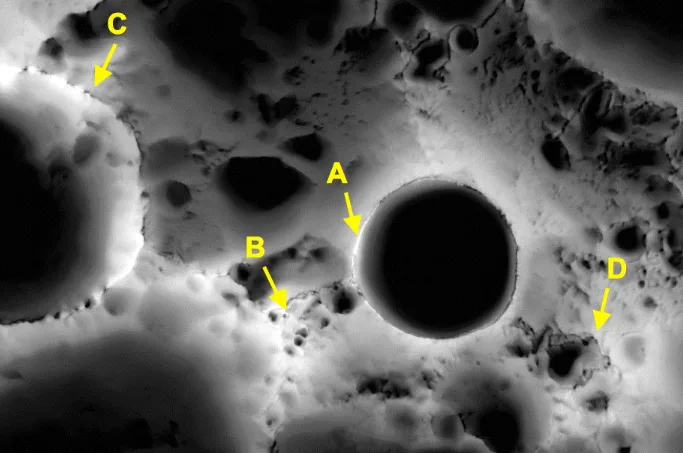

What you'll learn
- Distinguish and ask factual, conceptual, and debatable questions about a design problem.
- Understand why each type of question is useful.
Client
Please design an autonomous rover.
You
May I ask what is it for?
Client

Food delivery to homes and doorsteps.
What factual questions should we be asking to learn more about the situation?
e.g.
-
Who is it for?For the China National Space Administration — their Chang'e-7 mission at the Moon's south pole, with an orbiter, lander, hopper, and relay working alongside this rover.
-
What is it for?Drive on sunlit ground, map the area, and search for signs of water ice — targets for a hopper to sample in nearby shadow.
-
Where will it drive?

Sunlit routes near the Moon's south pole — close to permanently shadowed craters, but not inside them.
Facts describe what is — context, constraints, existing conditions.
What conceptual questions could we be asking to better define the problems?
e.g.
-
Why do we want water ice?Ice isn't just for drinking — it could support air and fuel for a long-term base. Finding it changes whether staying on the Moon is even worth planning.
-
Why would we want to stay in the light?At the south pole the Sun sits low — routes that stay in sunlight may be the only way to keep solar panels charging and batteries warm enough to work.
-
Why would we want to avoid staying in the craters?Shadowed crater floors may have no sunlight for billions of years — a solar-powered rover could freeze and lose power long before it reaches the ice. That's why the mission may send a hopper for the dark craters instead.
-
How can it find water ice?On sunlit ground it may use radar and spectrometers to hunt for signs of ice below the surface — then flag the best spots near crater rims for a hopper to sample.
-
How can we follow the light?Plan routes along sunny crater rims and lit patches, avoid shadow, and save enough battery to survive the long lunar night (~14 Earth days without Sun).
-
How can it avoid driving into craters?Use maps from orbit, cameras and sensors at crater edges, and strict route rules — stay on known sunlit paths and let a hopper handle the dark floors instead.
Conceptual questions clarify meaning, relationships, and the nature of the problem — mostly why and how questions.
What debatable questions could we be asking to suggest potential solutions?
e.g.
-
Should rovers be doing the same jobs, or should each take on a specific role?Every rover doing the same thing is easier to plan — but one might map, one might scout ice, and one might carry tools. Teams could disagree on how to split the work.
-
Should all rovers be the same, or should some carry bigger solar panels, comm tools, soil analysers, and so on?Identical rovers are simpler to build and fix — but specialised rovers might do one job really well. A team could split the work instead of loading everything onto one machine.
-
Should the rover have bigger wheels, or more smaller wheels?Big wheels might roll over bumps and loose dust better. Many small wheels might keep going if one gets stuck. Real rover teams argue about this.
-
Should the rover use a drill, a shovel, or something else to dig into the soil?A drill might reach deeper ice — a shovel or scoop could be lighter and simpler. Different tools suit different ground, and teams could disagree on the best pick.
-
Should humans on Earth remote-control the rover, or should it drive on its own?Humans can think things through — but signals take time to reach the Moon. A rover that drives itself reacts faster, but it might make a mistake humans would have caught.
-
Should the rovers and hoppers share map data frequently, or only when they need to?Sharing often keeps everyone up to date — but it uses power and radio time. Sharing only sometimes is lighter, but one robot might work from old information.
Debatable questions suggest design choices — open-ended, with more than one reasonable answer.
We ask factual questions to
We ask conceptual questions to
We ask debatable questions to
*defining problems means
and